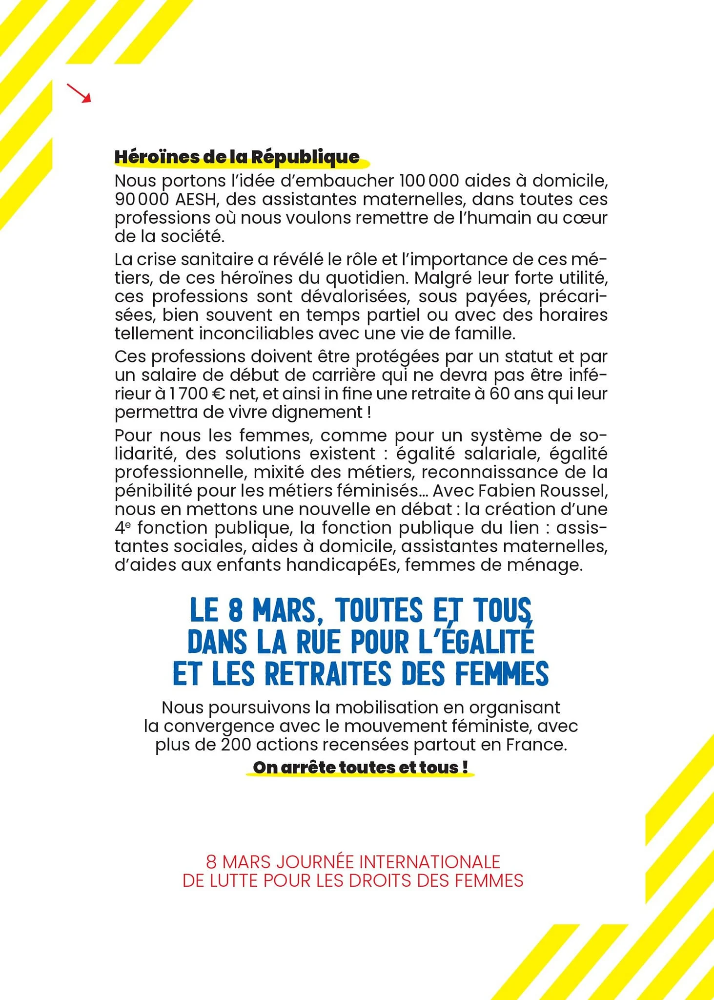

Publication d’archives
Le 8 mars, journée internationale de lutte pour le droit des femmes, toutes & tous dans la rue pour l'égalité…
Date indiquée par Facebook · 8 mars 2023
Texte conservé avec la publication
Contexte du dossier
L’appel du 8 mars 2023 lie égalité et retraites des femmes. Fin mai, une lettre de NousToutes79, PCF79, UD et UL CGT79 et Solidaires79 demande au maire de Niort d’annuler la conférence d’Aude Mirkovic prévue le 1er juin au centre Du Guesclin. Les signataires dénoncent des positions transphobes, sexistes et LGBTI+phobes et rappellent le refus d’illuminer la mairie pour la Marche des fiertés. L’appel fédéral du 31 affirme que le courrier est resté sans réponse et convoque un rassemblement à vingt heures. Un autre texte critique l’effacement de passages piétons arc-en-ciel et compare Niort à La Rochelle. Ces accusations et demandes appartiennent aux organisations signataires ; le corpus ne donne ici ni réponse municipale ni bilan du rassemblement.

Sources
Archive rouge · export Facebook · AR-0002-FB-01734
À lire aussi · Mazan : Un procès historique qui montre le chemin qu’il reste à parcourir - Communiqué du PCF - Parti…